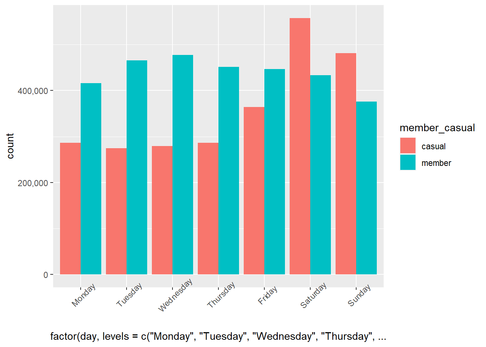
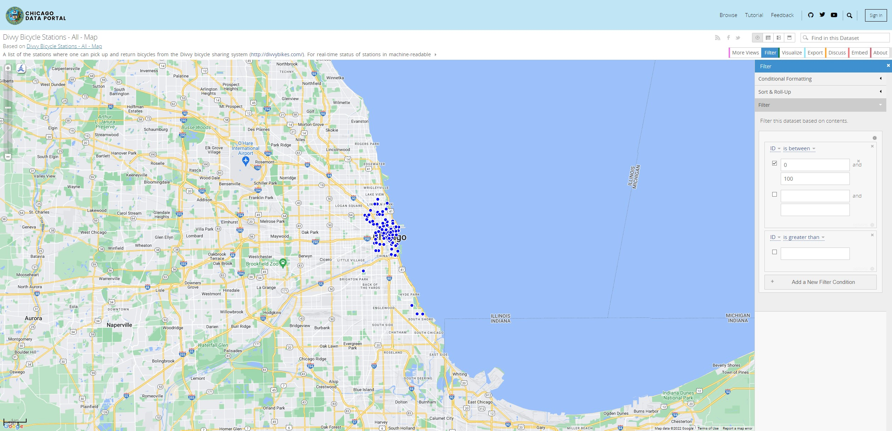
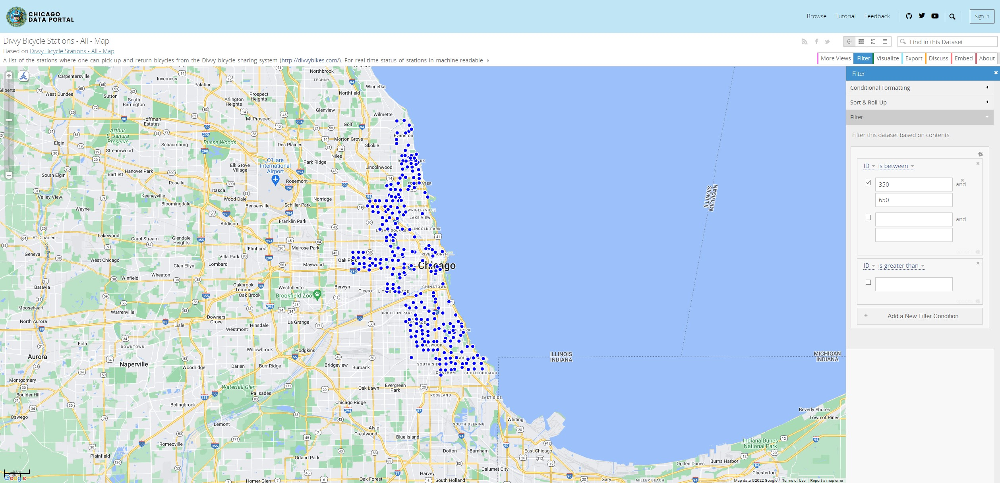
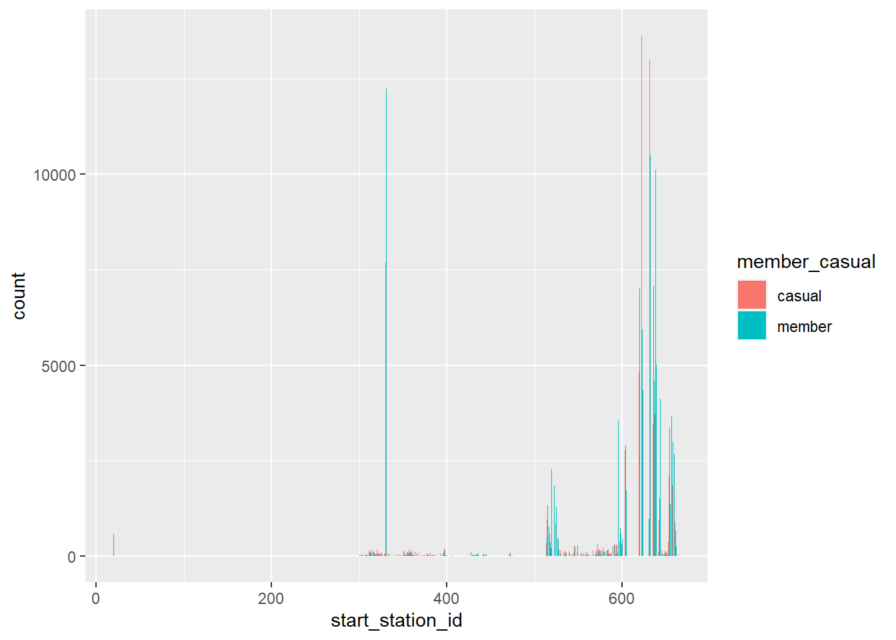
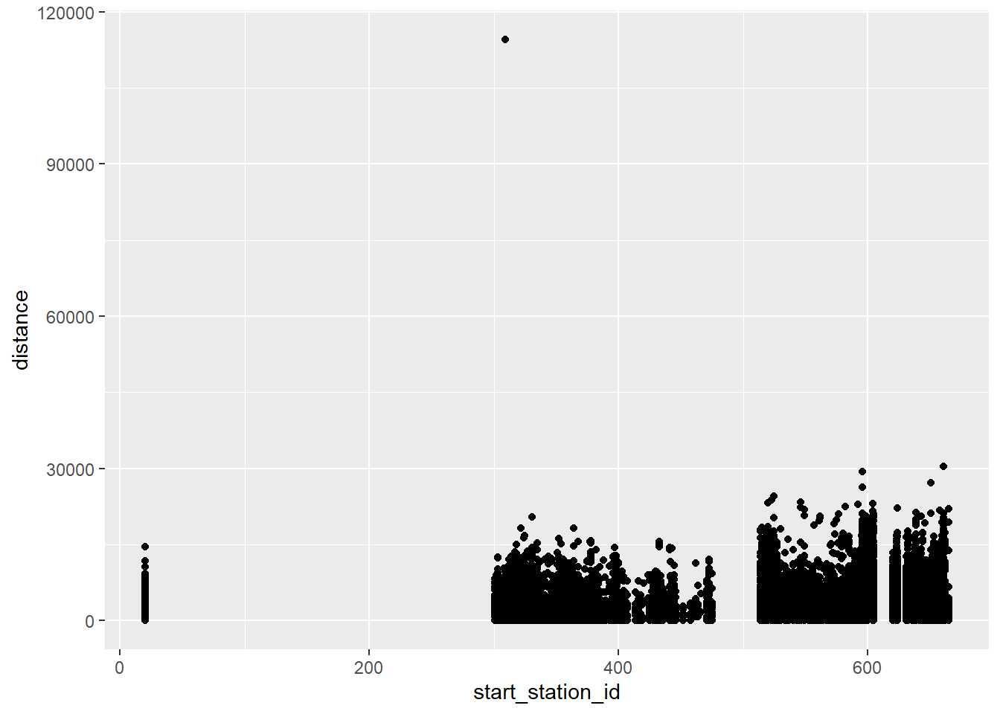

Divvy is a bikeshare system encompassing Chicago and Evanston, Illinois and a program of the Chicago Department of Transportation (CDOT). More information about the program can be found here.
Membership pricing: * Annual memberships are $9 per month – provide unlimited 45-min rides
* Single Rides are $3.30 per trip
* Day passes are $15 for unlimted 3-hour rides in a 24-hour periodUsing the notion that annual members are more profitable than casual riders, our task is to find out how these two populations use Cyclistic in an effort to guide marketing to optimize conversion from casual to annual membership.
The Data was pulled from a public database provided by the City of Chicago’s Divvy bicycle sharing service in partnership with Bikeshare (Lyft Bikes and Scooters, LLC). The license provides for access, reproduction, analyzing, copying, modifying, and distributing for any lawful purpose. These files were downloaded and their trip data files extracted to a folder called “trip_data” within my cyclistic_case_study folder. Legitimacy of the data does not seem to be a concern as it was provided by the City and Company so it is firsthand. Data was current as this is a continuously updated resources and contained data up to the date of this writing.
Some short comings of the data are that they are incomplete when viewed together. As described below, documentation formats change throughout years so while some years have demographic information, other do not. Another major shortcoming is the lack of user id as a variable. Without this information it is hard to identify user habits and compare casual riders to annual subscribers because we do not know who is who.
I loaded in multiple packages in order to perform functions as well as set the appropriate working directory for where the files were saved.
library(tidyverse)
library("dplyr")
library("purrr")
library("lubridate")
library("ggplot2")
library("magrittr")
library("spatialrisk")
library("scales")
library("rmarkdown")I then imported the files for 2021 into one data frame to work with and save for future use. I found the station information for Divvy stations but I used excel to open that file. It was mainly used to determine validity of station id’s and find the higher numerical station_id before naming conventions changed.
setwd("C:\\Users\\Timla\\Documents\\r_portfolio\\cyclistic_markdown\\cyclistic_data_files\\2021_data")
files <- list.files()
trips <- map_dfr(files, read_csv)I converted the station ids to numeric from character. Converted the lat-long data to distance, and added the day of the week to the date.
#convert ids to numeric
trips$start_station_id <- as.numeric(trips$start_station_id)
trips$end_station_id <- as.numeric(trips$end_station_id)
#convert lat-long to distance
trips <- trips %>%
mutate(trips, distance = spatialrisk::haversine(trips$start_lat, trips$start_lng, trips$end_lat, trips$end_lng))
#add day of the week
trips$day <- weekdays(as.Date(trips$started_at))I removed the columns I wasn’t initially interested in in order to work with a smaller data frame and attempt to save as much data as possible when I remove the NA values. After dropping NA values we lost about 60% of our data which is substantial. This wasn’t necessarily a surprise though considering the inconsistencies in the data and the large number of NA values spread throughout.
trips_subset <- subset(trips, select = c(ride_id, started_at, day, start_station_id, distance, member_casual))
trips_clean <- drop_na(trips_subset)##Analyze and visualize
I had some questions I wanted to start looking at which is what I did below. I initially though that there would be differences between our users when it came to when they were using our bikes. As I suspected, annual members are likely using our bikes more throughout the week as a means of commuting compared to our casual riders who are likely using them on the weekends to just get around.
ggplot(data = trips) +
geom_bar(mapping = aes(x = factor(day, levels = c("Monday", "Tuesday", "Wednesday", "Thursday", "Friday", "Saturday", "Sunday")), fill = member_casual), position = "dodge") +
theme(axis.text.x = element_text(angle = 45)) +
scale_y_continuous(label = comma)
Looking at the graph, we can see that there are more annual members using our bikes during the week compared to the casual members on the weekend.
Next, I looked at the station ID compared to the membership type and trips length. This was a little harder to analyze give then inconsistencies in the data, but I believe there is significant results from it. I removed data from stations above 762 for this portion because, while this severely limits the number of data points, there was a very clear numbering convention being used up until a certain point. Low station ID’s are primarily focused around downtown in the “touristy” parts of Chicago while larger numbers began to sprawl out into the suburbs. This can be seen clearly in the images here:
image:  image: 
Finally, I looked at station ID vs the length of trip and station ID vs membership type. I hypothesized that if we could see that longer distance trips were being taken, and that these trips were often coming from these higher numbered stations, we might also see a higher number of annual members in these trips.
#start station vs membership
trips_by_id <- subset(trips_clean, start_station_id < 762)
ggplot(data = trips_by_id) + geom_bar(mapping = aes(x =
start_station_id, fill=member_casual), position = "dodge")
##length of trip vs station_id
ggplot(data = trips_by_id) +
geom_point(mapping = aes(x = start_station_id, y = distance))
We can see in the bar chart that as the station number goes up, so too does the number of annual members in proportion to casual members (we are seeing more blue than orange). In lower station ID’s., it looks more orange than blue. We can also see that as the station number gets higher, the distances traveled trend upward in the scatter plot with the lower stations reaching up to about 15 kilometer (15,000 meters/9 miles) at the longest and 30 kilometers (30,000 meters/18 miles) for the higher stations. This helps support the notion that the lower station ids that are primarily located downtown are associated with shorter trips. Conversely, higher station ID’s are located further out and are typically associated with longer trips.
Given the data that we had to work with, I attempted to find answers to how different users were using our bikes. I found that there is an association between weekday, station, and membership types. My recommendations would be as follows:
Most importantly, to get a good grasp on what our users are doing, we need to identify them in some way in the data. We can maintain security of personal identifying information, but we need to be able to identify what trips are being taken by what users. This would drastically improve the analysis process for this data and task.
Given weekday trips are predominantly annual members, casual members who regular ride on the weekdays or that could be identifies as commuters, would be a good target of marketing an annual membership.
Riders that have longer trips and/or have a tendency to take bikes from more suburban stations my be willing to convert to an annual membership.